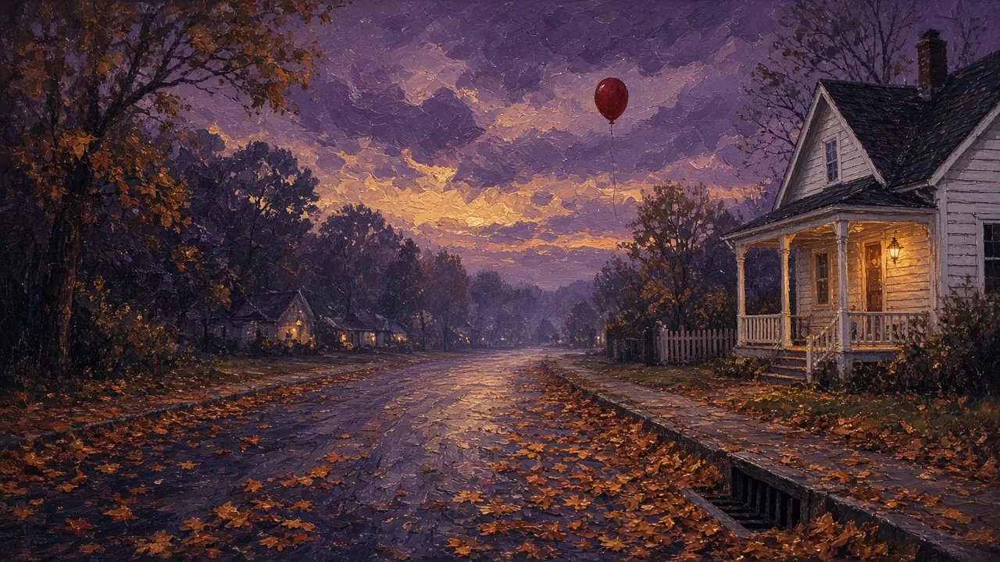
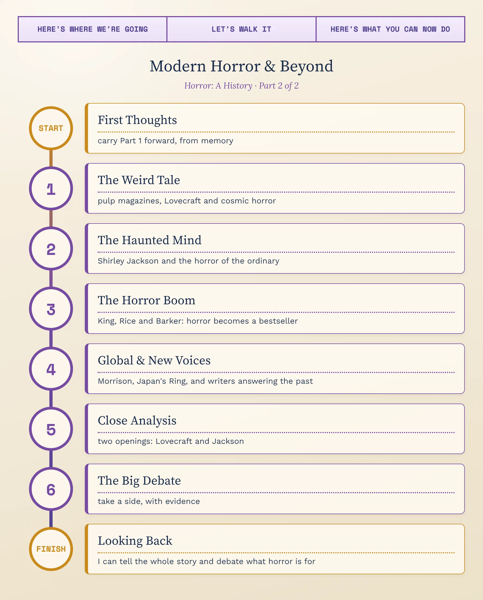
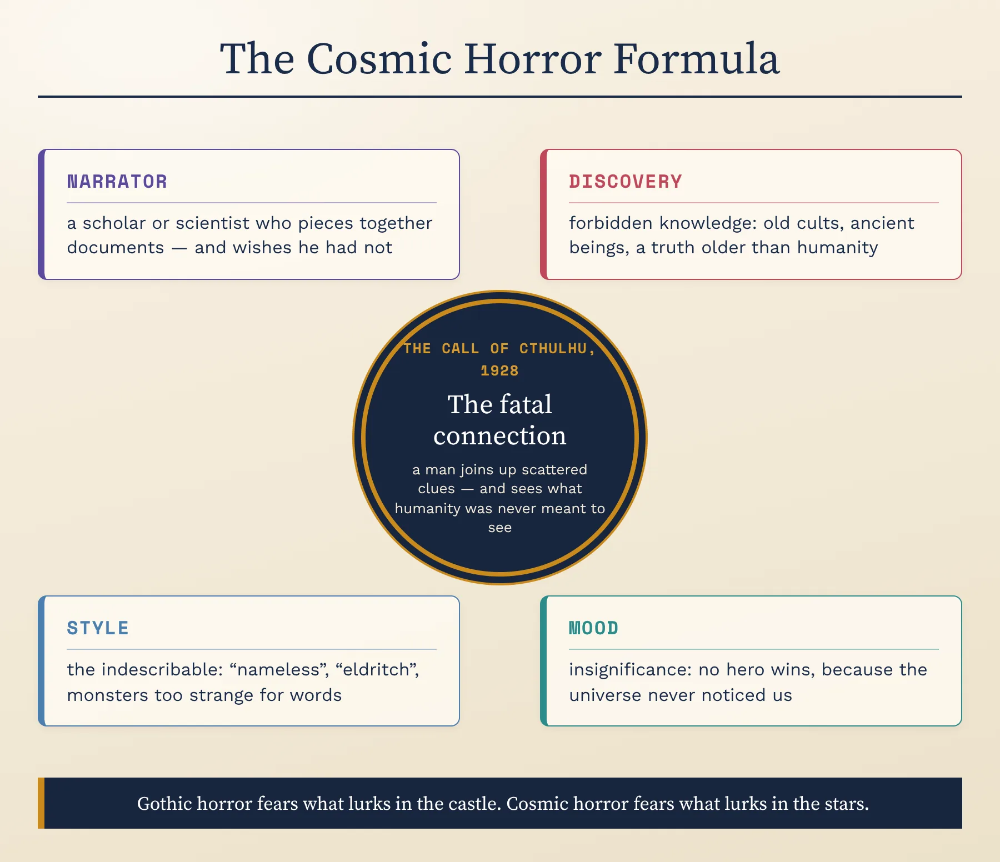
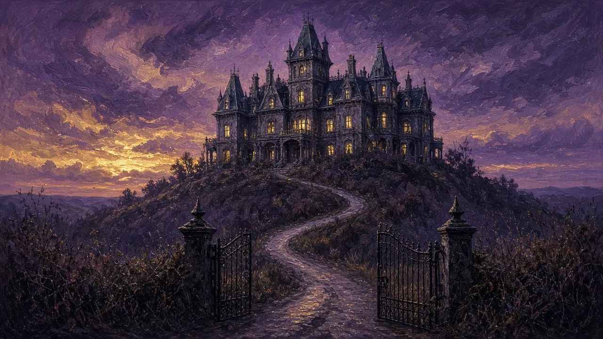
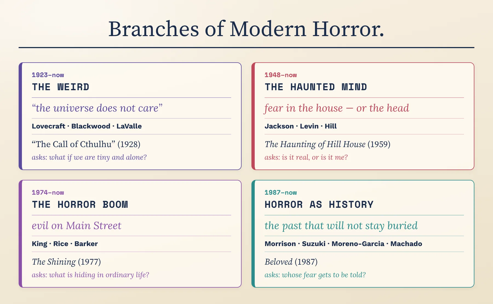
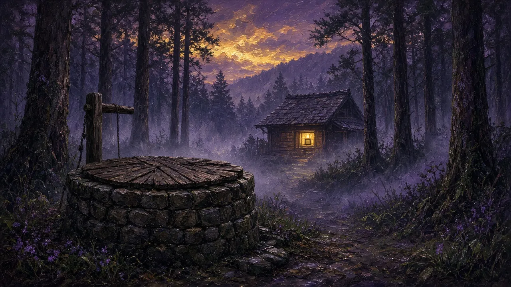
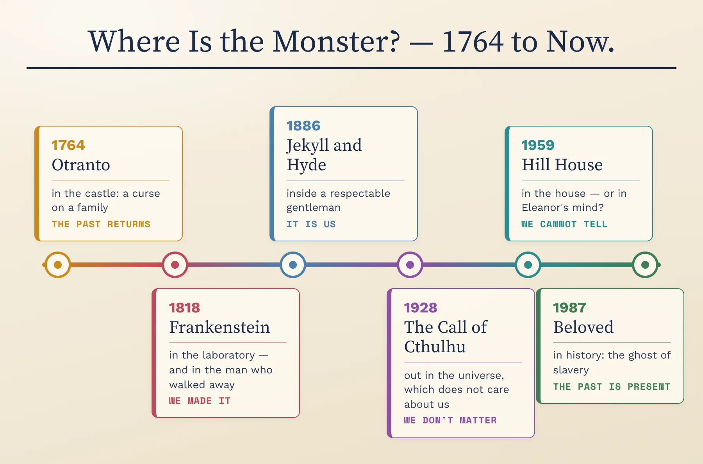
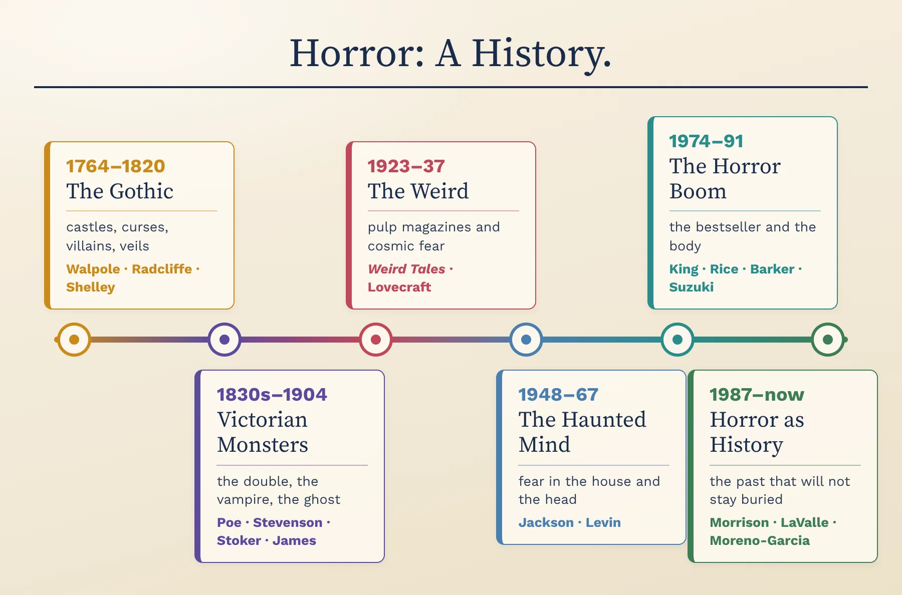
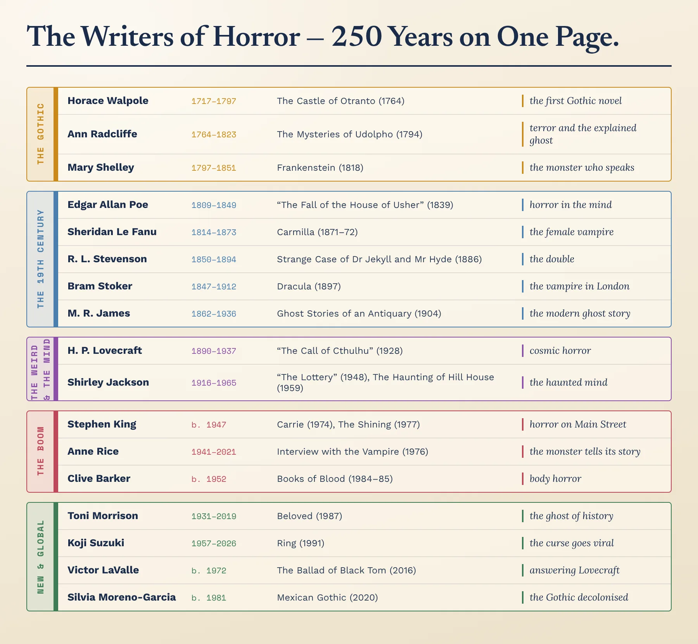
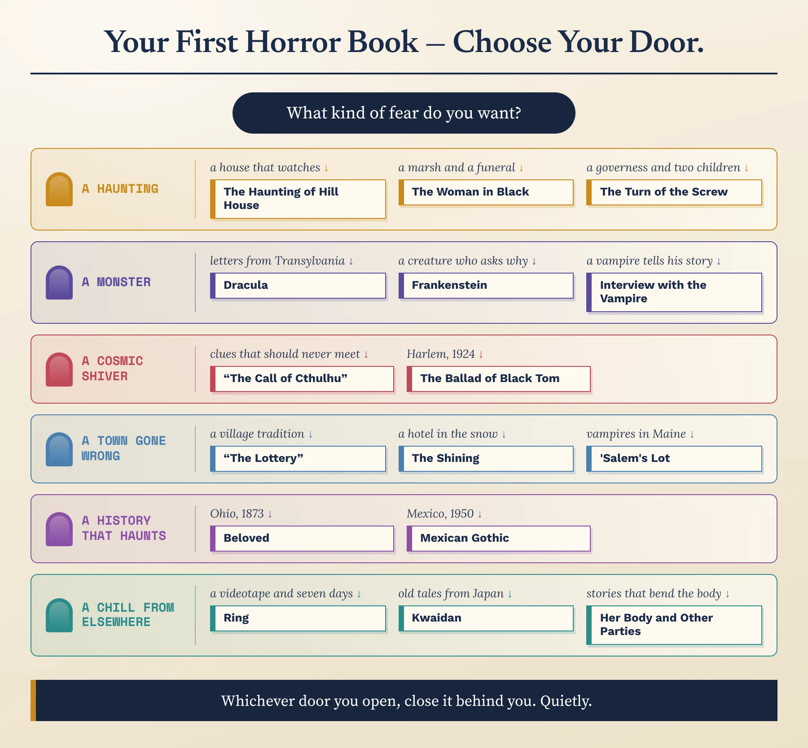

The Weird, the Mind & the World · C1/C2 · Speaking, Analysis & Discussion

By 1900, horror had its classic forms: the Gothic novel, the Victorian monster and the ghost story. The next century would break them open. Writers turned their eyes to the stars and found a universe that did not care about us; they moved the haunting into the family home and the human mind; they made horror the best-selling fiction of the 1970s and 80s; and, finally, they used the genre to tell histories that polite fiction had left out. This lesson follows that expansion, and then looks closely at how two great writers frighten us from the very first sentence.
1. Retell, briefly: what happens at the start of The Castle of Otranto, and why is it called the first Gothic novel?
2. Define terror vs horror and the uncanny in your own words, with one example each.
3. The “monster within / monster without” contrast in one sentence — and which of the four Victorian monsters most stuck with you? Say what happens in its story.
4. What did Poe add to horror — and what makes an M. R. James ghost story?
In the early twentieth century, cheap magazines printed on rough wood-pulp paper gave horror a new home in America — and one writer in Providence, Rhode Island, used them to imagine a fear bigger than any ghost.
Before the First World War, British writers such as Arthur Machen (The Great God Pan, 1894) and Algernon Blackwood (“The Willows”, 1907) had begun to write a new kind of supernatural story: not about ghosts of the dead, but about vast, ancient, inhuman forces just behind the surface of the natural world.
In America, the magazine Weird Tales, whose first issue was dated March 1923, gave this kind of story a home and a name. Its most famous contributor, H. P. Lovecraft, also became its theorist. His long essay “Supernatural Horror in Literature” (1927) opens with a sentence quoted ever since:
Who he was: a shy, self-educated writer from Providence who published mostly in pulp magazines, earned very little and died poor at forty-six. His fame came after his death, when two admirers founded a small publishing house, Arkham House, in 1939 to keep his work in print.
“The Call of Cthulhu” (Weird Tales, 1928): a young man sorting the papers of his dead great-uncle, a professor, finds three stories that should never have met: a sculptor's nightmare of a monstrous figure, a police inspector's report of a cult in the swamps of Louisiana, and a Norwegian sailor's account of a dead city rising from the Pacific. Pieced together, they reveal that Cthulhu, a gigantic being older than humanity, lies sleeping beneath the sea — waiting.
The problem: Lovecraft's letters and stories contain open racism and fear of immigrants — most notoriously “The Horror at Red Hook” (1927), set among the immigrant communities of Brooklyn. Readers and writers today still argue about how much that fear of “the other” is built into his horror. We will meet one writer's answer in this lesson.
Why he matters: he invented cosmic horror, and his shared universe of invented gods, forbidden books and doomed scholars has been borrowed by writers, film-makers and game designers ever since.

The chart breaks cosmic horror into four parts — a scholarly narrator, a forbidden discovery, a style that says something is beyond words, and a mood of insignificance. Take a film, game or series you know about an alien, an ancient being or a terrible discovery. How many of the four does it have? Which one does it drop — and does it become less frightening, or just different?
Gothic horror fears what is hidden in the castle; cosmic horror fears that we don't matter at all. Which is more frightening to you — a monster that hates you, or a universe that doesn't notice you? Why?
Four more terms will carry you through the rest of the century. Flip each card, then open the full idea.
Traditional horror threatens a person, a family or a town. Cosmic horror threatens the idea that humans matter. Its monsters are not evil; they are simply so old, so large and so alien that human life means nothing to them. Its heroes rarely win — the best they can do is survive, often with their minds broken by what they have learned.
The fear is philosophical: modern science has shown us a universe of unimaginable size and age, and cosmic horror asks how it feels to live in it.
Haunted castles go back to Otranto, but the modern haunted house is closer to home. Its horror is uncanny in Freud's sense: the place that should be safest becomes the most dangerous. The house often seems alive — watching, choosing, remembering — and the best writers leave it unclear whether the evil is in the building or in the people who live there.
The film critic Carol J. Clover coined the term in a 1987 essay, “Her Body, Himself”, and developed it in her book Men, Women, and Chain Saws (1992). Studying American slasher films, she noticed a pattern: one by one the teenagers are killed, until a single, watchful young woman is left to face the killer — and often defeats him.
Clover asked what it meant that audiences, many of them young men, were invited to identify with her. Critics still debate whether the final girl is a feminist figure or a fantasy; writers and film-makers now play with the pattern knowingly.
Instead of a monster from outside, body horror makes our own bodies the threat: transformation, infection, mutilation, a body that no longer obeys us. It has deep roots — Frankenstein's stitched-together creature, Jekyll's change into Hyde — but became a recognised kind of horror in the 1980s, in films and in fiction such as Clive Barker's.
Its subjects are often very real fears: illness, ageing, pregnancy, surgery, the loss of control over who and what we are.
After the Second World War, some of the most frightening writing moved away from monsters altogether — into small towns, family homes and the uncertain minds of the people who lived in them. The question was no longer “what is out there?” but “what are ordinary people capable of?” and “can I trust my own mind?”
Who she was: a writer and mother of four who lived in a small Vermont college town and wrote both comic pieces about family life and some of the most unsettling fiction of the century.
“The Lottery” (1948): on a sunny June morning, the people of a small American village gather, as they do every year, for a lottery. The atmosphere is friendly; children collect stones. Only at the end do we learn what the “winner” receives: she is stoned to death by her neighbours. Published in The New Yorker, it produced the most mail the magazine had ever received for a work of fiction; Jackson later wrote that of the three hundred or so letters she received that summer, only thirteen spoke kindly to her.
The Haunting of Hill House (1959): Dr Montague, a scholar of the supernatural, rents a notorious old house for the summer and invites people with psychic experiences to stay. Among them is Eleanor Vance, a lonely young woman who has spent years caring for her difficult mother. Doors close by themselves, words appear on the walls — and the house seems to want Eleanor. Jackson never settles whether the haunting is real, or Eleanor's mind breaking.
Why she matters: she showed that horror needs neither castles nor monsters — only a community, a family or a lonely mind — and her ambiguity is Todorov's fantastic at its purest.

Ira Levin, Rosemary's Baby (1967): a young wife, Rosemary, moves with her actor husband into an old New York apartment building. Their friendly elderly neighbours take a strong interest in her pregnancy — and Rosemary begins to suspect that her husband has made a deal with a circle of Satanists. The horror is in the everyday: kind neighbours, a doctor's advice, a husband who will not listen. The 1968 film made it famous.
Susan Hill, The Woman in Black (1983): a young London solicitor, Arthur Kipps, is sent to settle the affairs of a dead widow at Eel Marsh House, which is cut off by the tide on the east coast of England. At her funeral he sees a pale woman dressed in black — and learns that whenever she is seen, a child dies. A deliberate return to the Victorian ghost story, it became a stage play that ran in London's West End for more than thirty years.
Jackson never tells us whether Hill House is truly haunted. Is that ambiguity a strength — or a writer avoiding a decision? Argue it aloud, then compare your view with a critic's.
“The Lottery” contains no supernatural element at all. Is it a horror story? What exactly is the monster in it — and could such a story be set in your town, today?
Jackson's method is to describe a normal, even pleasant scene in calm, ordinary language, and let one wrong detail spread. Write three sentences about a friendly community event — a market, a wedding, a school sports day — with one detail that is not quite right. Read it aloud.
From the late 1960s, horror became big business. Successful films — Rosemary's Baby (1968), The Exorcist (1973, from William Peter Blatty's 1971 novel) — sent readers to bookshops, and a new generation of writers turned horror into the best-selling fiction of its day. Three of them changed the genre.
Who he is: a former English teacher from Maine, where most of his stories are set. In his memoir On Writing (2000) he describes throwing the first pages of his first novel in the bin; his wife, Tabitha, took them out and told him to keep going.
Carrie (1974): a bullied teenage girl with a religious, controlling mother discovers that she has telekinetic powers — and, humiliated at her school prom, takes revenge on the whole town.
The Shining (1977): Jack Torrance, a struggling writer and recovering alcoholic, takes a job as winter caretaker of the empty Overlook Hotel in the Colorado mountains, with his wife Wendy and their young son Danny, who has a psychic gift he calls “the shining”. Snowed in, Jack is slowly possessed by the hotel's violent past. It is a haunted-house novel, and also a novel about addiction and a father's anger.
Why he matters: he moved horror to Main Street — supermarkets, school corridors, brand names, ordinary American families — and wrote it in a warm, conversational voice that made millions of readers trust him before he frightened them.
Who she was: a writer from New Orleans, the city that became the setting of much of her work.
Interview with the Vampire (1976): in a room in modern San Francisco, a vampire named Louis tells a young reporter the story of his two hundred years of life: how he was made a vampire in eighteenth-century Louisiana by the charismatic, cruel Lestat; how he struggled with the need to kill; and how they created a child vampire, Claudia, who would never grow up.
Why she matters: she gave the monster the narrator's chair. Where Dracula shows the Count only through the eyes of his victims, Rice's vampires tell their own stories — lonely, guilty, glamorous outsiders — and readers fell in love with them.
Who he is: a Liverpool-born writer, artist and film-maker who began in experimental theatre.
Books of Blood (1984–85): six volumes of short stories, violent, inventive and often strangely beautiful, which made him famous almost overnight. Stephen King's praise was printed on the American editions: “I have seen the future of horror and his name is Clive Barker.”
The Hellbound Heart (1986): a short novel about a man who solves a puzzle box and opens a door to beings who offer extreme sensation; Barker directed its film version, Hellraiser (1987), himself.
Why he matters: he pushed horror towards body horror and the fantastic, and insisted that monsters could be as fascinating as they are frightening.

Three writers, three books you now know the shape of: King's hotel in the snow, Rice's vampire with a microphone, Barker's puzzle box. Which would you actually read first — and which premise do you find weakest? Defend both choices; taste needs reasons.
What did Carol Clover mean by “the final girl”? And what did Anne Rice change about the vampire story?
Horror was never only English-speaking — and in the last forty years, some of its most powerful books have come from writers using the genre to tell stories that the classic tradition left out.
Japan has a long tradition of kaidan, strange tales of ghosts and spirits. Ueda Akinari's Ugetsu Monogatari (Tales of Moonlight and Rain, 1776) is a classic collection, and in 1904 the Greek-Irish writer Lafcadio Hearn, who had made his home in Japan, retold many old stories in English in Kwaidan.
Koji Suzuki, Ring (1991): a Tokyo journalist investigating the sudden deaths of four teenagers on the same night discovers a strange videotape that they all watched. Whoever watches it dies exactly one week later — unless they can find out how to break the curse. The trail leads to the story of a gifted young woman, Sadako, and an old well. Hideo Nakata's 1998 film Ringu became a worldwide hit and was remade in Hollywood in 2002. Suzuki died in May 2026.
Why it matters: Ring joined the oldest kind of story — a ghost with a grievance — to the newest technology, and imagined a curse that spreads like a virus by being copied and shared.

Who she was: one of the most celebrated American novelists of the twentieth century, winner of the Nobel Prize in Literature in 1993.
Beloved (1987): in Ohio in 1873, Sethe, who escaped from slavery, lives with her daughter Denver in a house haunted by the angry spirit of her dead baby. One day a young woman who calls herself Beloved arrives — and slowly the past Sethe has tried to forget, including a terrible act she committed to save her child from slavery, returns. Morrison drew loosely on the true story of Margaret Garner, who escaped slavery in 1856. The novel won the Pulitzer Prize in 1988.
In her own words: the novel begins: “124 was spiteful.” (124 is the number of the house.)
The debate: Beloved is usually shelved as literary fiction, not horror, and Morrison is not called a horror writer. Yet it is a ghost story, and a haunted-house story. Many critics now argue that it shows what the Gothic was always really about — a past that will not stay buried — applied to the history of slavery.
Victor LaValle, The Ballad of Black Tom (2016): a short novel that retells Lovecraft's “The Horror at Red Hook” from the point of view of a young Black musician from Harlem in 1924, drawn into a world of cosmic horror and everyday racism. LaValle, who loved Lovecraft as a teenager, dedicated it “For H. P. Lovecraft, with all my conflicted feelings.”
Silvia Moreno-Garcia, Mexican Gothic (2020): in 1950s Mexico, a glamorous young woman from Mexico City, Noemí Taboada, travels to a decaying mansion in the mountains to help her cousin, who has married into an English family and sent a frightening letter. The house, High Place, hides a secret that keeps the family alive. The classic Gothic house is reread through the history of colonialism.
Carmen Maria Machado, Her Body and Other Parties (2017): a collection of short stories, a finalist for the National Book Award, that mixes horror, fairy tale and science fiction to explore women's bodies and lives. Its first story, “The Husband Stitch”, retells a famous campfire tale about a woman who always wears a green ribbon round her neck.

The line moves the monster from a cursed castle to a laboratory, a gentleman's body, the stars, a lonely woman's mind and the history of a nation. Choose two neighbouring stops and explain the change: what new fear made the move necessary? Then add a stop of your own for today — where is the monster now?
Both of our specimens begin, strangely, with a general statement about the human mind and reality — before a single character appears. The first is Lovecraft's “The Call of Cthulhu” (1928), whose text is now in the public domain; the second is the first sentence of Shirley Jackson's The Haunting of Hill House (1959).
Answer aloud first. Then compare.
Write one sentence that begins a horror story with a general claim about people, minds or the world — no characters, no monster. Use either Lovecraft's grand style or Jackson's calm one. Read it aloud and ask your partner: what kind of horror does it promise?
Everything you need for these is now in your head: Lovecraft's indifferent universe, Jackson's village and her house, King's hotel, Rice's vampire, Barker's bodies, Suzuki's tape, Morrison's ghost and the new voices answering the tradition. Pick two debates. Take a position, support it with the writers and terms you've learned, and concede one point to the other side.
1. Lovecraft was enormously influential and openly racist. Should we still read him — and can a writer like LaValle “answer” a story, rather than simply rejecting it?
2. Is Beloved a horror novel? Does the label matter — or does refusing it reveal snobbery about the genre?
3. “Horror is a conservative genre: the monster is destroyed and normal life is restored.” “No — horror is radical: it shows what normal life is hiding.” Which is truer of the books we have studied?
4. The final girl survives because she is watchful and clever — or, critics say, because she is “good”. Is she a feminist hero, or a fantasy that rewards the right kind of girl?
Draft one sentence comparing Jackson and King that could open a comparative essay. It must make an arguable claim — not just state a difference. Use a frame, then say yours aloud and defend it.
No notes for this — it pulls both lessons together.
1. Cosmic horror in two sentences: how is it different from Gothic horror? Use “The Call of Cthulhu” as your example.
2. What happens in “The Lottery” — and why did it shock its first readers?
3. Define the haunted house, the final girl and body horror, with an example each.
4. Name one horror story from Japan and one by a new voice, with what happens in each and what it adds to the tradition.
5. Walk the “where is the monster?” line: five stops, five answers.
Now measure yourself against the two big maps — one for the whole timeline, one for the writers. Where you were wrong, say it again, right this time.

Find three works on the line you could not have placed before these two lessons. For one of them, say what came just before it and how it was a reply — the fear it changed, the rule it broke, or the voice it added.

Pick three writers from three different centuries or decades. Put them in order and say, for each, the one thing they added that the writer before them had not — a new monster, a new technique, or a whole new point of view.
Define horror in a single sentence that covers everything from The Castle of Otranto to Mexican Gothic. Say it aloud — then stress-test it: does it wrongly include every story with a death in it? Does it wrongly exclude “The Lottery” or Beloved? Refine it until it survives.

Follow the flowchart to the book it picks for you. Do you agree with where it sent you? Make the case for a different first book instead — in the language of the toolkit: its terror or horror, its monster, what it is really afraid of.
Across both lessons: which movement or writer most changed how you see the genre — and which one book will you actually go and read? (Say why, in the language of the toolkit: terror, the uncanny, the monster as metaphor, cosmic horror, the haunted mind.)